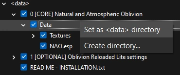

Visuals
Creating a Separator in MO2.
- Right-click the empty space in the left pane of MO2 and select Create Separator.
- Name the separator Visuals.
There may be less visual mods than you may be used to with a modded game, but there is good reason for that. The game has a pretty unoptimized renderer, built on now 20 year old DirectX 9.
Mesh replacers are often grossly unoptimized, which is disastrous, since the mesh pipeline is the main performance bottleneck.
ENBs may make for pretty screenshots, but they are near-impossible to play with due to the many bugs, performance problems, and vision-obscuring effects they use.
Texture mods often suffer from being inadequately oversized, which leads to wasteful memory usage and increased loading times and stutter. They also create a great disparity between the new textures and the vanilla textures, both in quality and in style, making for some jarring texture transitions or seams.
NAO - Natural and Atmospheric Oblivion
Installation instructions:
- Main Files - NAO - Natural and Atmospheric Oblivion 
- Additionally install NAO - Even Brighter Nights and Closer Fog